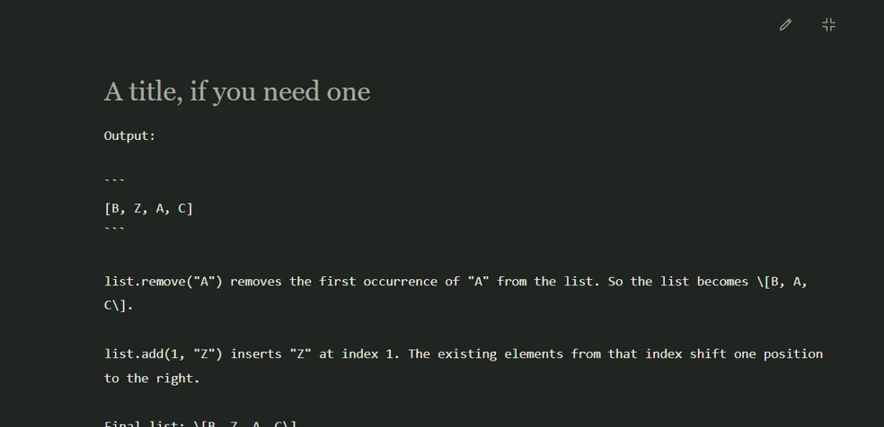

MARGINHOP
[k7p2]Inside a HashSet
A hash narrows the search. Equality identifies the matching element.
names.contains("Arka");When the page runs out, keep the thought going. Write a short code in the margin and use it to open the full note on your PC.
Windows release details ↓ Explore featuresWorks offline · No account required
[k7p2]A hash narrows the search. Equality identifies the matching element.
names.contains("Arka");
Focus Mode in an earlier desktop build.
Return to a lecture example by code. When you remember the topic instead, search a phrase or narrow the list by tag.
Draft a chapter outline in Focus Mode, then switch to Read for a formatted view. For programming exercises, fenced Java blocks support optional snippets and completion.
Notes live on your PC. Export a local backup or connect your own private GitHub repository for optional backups.
Read the privacy policy ↗You can use MarginHop on its own. Paper codes are handy when a handwritten idea grows into a longer note.
Export your library as JSON and restore it on the other PC. The backup preserves note codes, so your handwritten references still work.
Local exports are readable files. If you enable GitHub backup, people with access to the repository can read its contents. Read the privacy policy.
For Windows 10 and 11.
The download link will appear here after release.